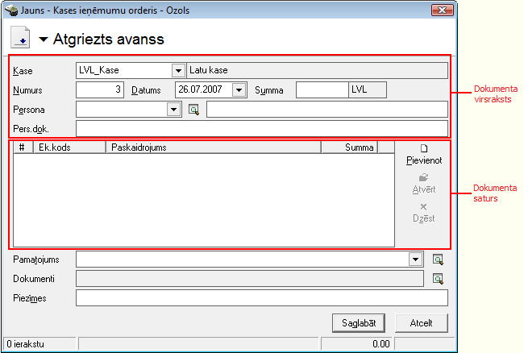
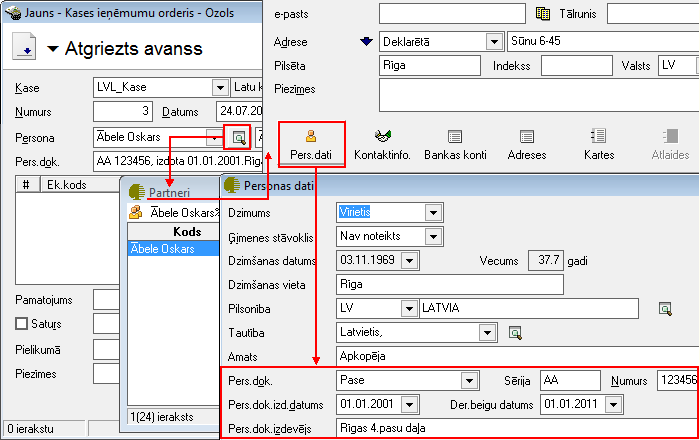
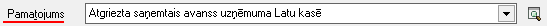
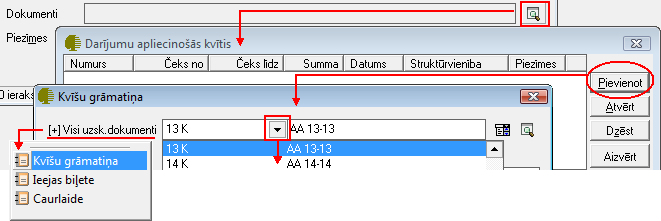
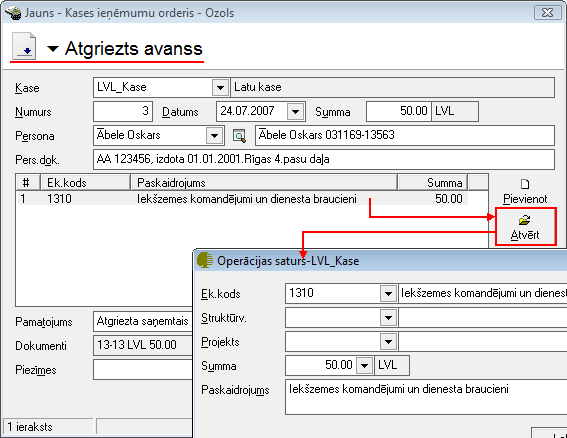

Kasē atgriezts avanss¶
Kases ieņēmumu ordera veids Atgriezts avanss jāveido, kad uzņēmuma kasē Avansu norēķinu persona atgriež saņemto avansu. Dokumenta veids Atgriezts avanss ir uzskatāms par kases ieņēmumu orderi, tam ir iebūvēta kases ieņēmumu ordera izdruka, un tas iekļaujas kases ieņēmumu dokumentu kopējā numerācijā. Kases ieņēmumu ordera veids nodrošina automatizētu norēķinu uzskaiti ar uzņēmuma Avansu norēķinu personām . Kasē atgriezto avansu dokuments tiek vienlaicīgi parādīts Kases ieņēmumu un Avansu norēķinu dokumentu žurnālos. Darījuma atšifrēšanai pa finanšu (EK) kodiem, jāaizpilda dokumenta saturs. Lai dokumenta izdrukā parādītos grāmatojumu konti, dokuments pirms izdrukāšanas ir jāiegrāmato.
JaunaKasē atgriezta avansapievienošana¶
Izvēloties dokumenta veidu Kasē atgriezts avanss, tiks atvērts jauns logs:
- scale
100%
Kasē atgriezta avansaVirsraksta aizpildīšana¶
Lai aizpildītu Kasē atgriezta avansa Virsrakstu, nepieciešams:
1. Norādīt Uzņēmuma kasi, uz kurusaņemta nauda kasē no Avansu norēķinu personas :

- scale
100%
Izvēlēties Datumu, kurā šisKasē atgrieztais avansstiek noformēts:

- scale
100%
3.Ievadīt kopējo Kasesatgrieztā avansa dokumentasummu:

- scale
100%
4. No saraksta izvēlēties nepieciešamo Personu - fizisku personu, no kuras kasē tiek saņemta nauda:

- scale
100%
Aizpildot lauku Persona , lauks Pers.dok. tiks aizpildīts automātiski, pie nosacījuma, ja šie personas dati būs aizpildīti Partnera kartiņā:
- scale
100%
Dokumenta - Kasē atgriezts avanss,Satura aizpildīšana¶
Lai aizpildītu dokumenta Saturu, dokumenta satura daļā nepieciešams nospiest pogu.. image:: images_ozols/24708.png :scale: 100% un tiks atvērts operācijas satura logs, kurā nepieciešams aizpildīt satura ierakstus (uzņēmumā izmantotās dimensijas) un norādīt satura ieraksta summu:

- scale
100%

- scale
100%
Dokumenta saturs var sastāvēt no vairākiem satura ierakstiem, kas kopsummā veido Dokumenta Virsrakstā norādīto summu.Pievienot nākamo satura ierakstu iespējams, satura daļā atkārtoti nospiežot pogu .. image:: images_ozols/24708.png :scale: 100% .
Kasē atgriezta avansa dokumenta Pamatojuma aizpildīšana¶
Dokumentalauks Pamatojums tiek drukāts kasesieņēmumu ordera rindā Pamatojums.
Lauku Pamatojums , iespējams aizpildīt manuāli vai izvēloties no Kases paskaidrojumu saraksta :
- scale
100%
Dokumentu piesaiste Kasē atgrieztam avansam¶
Kasē atgrieztam avansam, līdzīgi kā jebkuram citam Kases ieņēmumu orderim ,iriespējams piesaistītStingrās uzskaites dokumentusno Darījumu apliecinošo kvīšu , Kultūras un citu pasākumu ieejas biļešu vai Caurlaižu žurnāla,nospiežot uz lauka Dokumenti labajā pusē esošās lupas pogas un pievienojot nepieciešamo Stingrās uzskaites dokumentu:
- scale
100%
Kad izvēlēts nepieciešamais uzskaites dokuments un ierakstīta dokumenta summa, ierakstu iespējams pievienot, nospiežot .. image:: images_ozols/24874.png :scale: 100% vai arī, ja nevēlaties dokumentu pievienot - .. image:: images_ozols/24875.png :scale: 100% .
Lai izvēlētos uzskaites dokumentus piesaistītu dokumentam, logā “Darījumu apliecinošās kvītis” nepieciešams nospiest .. image:: images_ozols/24876.png :scale: 100% un dokuments tikspievienots Kases ieņēmumu dokumentam:

- scale
100%
Kad visi nepieciešamie lauki ir aizpildīti,dokuments - Kasē atgriezts avanss,ir sagatavots un to ir iespējams:
1. Saglabāt,nospiežot pogu .. image:: images_ozols/24615.jpg :scale: 100% -dokuments tiks saglabāts un būspieejams apskatei/labošanai/grāmatošanaivienlaicīgi Kases ieņēmumu un Avansu norēķinu dokumentu žurnālos.
2. Apstiprināt, nospiežot rīku joslā pogu .. image:: images_ozols/24740.png :scale: 100% - Kasē atgriezts avanss tiks Apstiprināts un to būs iespējams Grāmatot.
Dokumenta - Kasē atgriezts avanss -grāmatošana¶
Kasē atgrieztu avansuiespējams grāmatot no atvērta dokumenta vai izvēloties (iezīmējot)dokumentu Kases ieņēmumu vai vai Avansu norēķinu žurnālā.
Lai iegrāmatotu Kasē atgrieztu avansu, dokumentu nepieciešams Apstiprināt, nospiežot rīku joslā pogu .. image:: images_ozols/24740.png :scale: 100% .
Apstiprinātu dokumentu ir iespējams grāmatot, nospiežot rīku joslā pogu .. image:: images_ozols/.gif :scale: 100% how much ?pid=24741” border=”0”>.
Instrukcija - Dokumentu grāmatošanas principi
PievienotāKasē atgrieztā avansalabošana¶
Labojumus saglabātajādokumentā iespējams veikt atverot dokumentu Kasē atgriezts avanss, kurš vienlaicīgi pieejams apskatei/labošanai:doc:Kases ieņēmumu<227> un Avansu norēķinu dokumentu žurnālos.
Lai veiktu labojumus,dokumentunepieciešams atvērt, izmantojot rīku joslas pogu.. image:: images_ozols/24709.png :scale: 100% (ALT+A), unatvērtajāierakstā iespējams veiktnepieciešamos labojumus:
- scale
100%
Pēc labojumu veikšanas, veiktā izmaiņas iespējams .. image:: images_ozols/24615.jpg :scale: 100% vai .. image:: images_ozols/24617.jpg :scale: 100% . fiogf49gjkf05